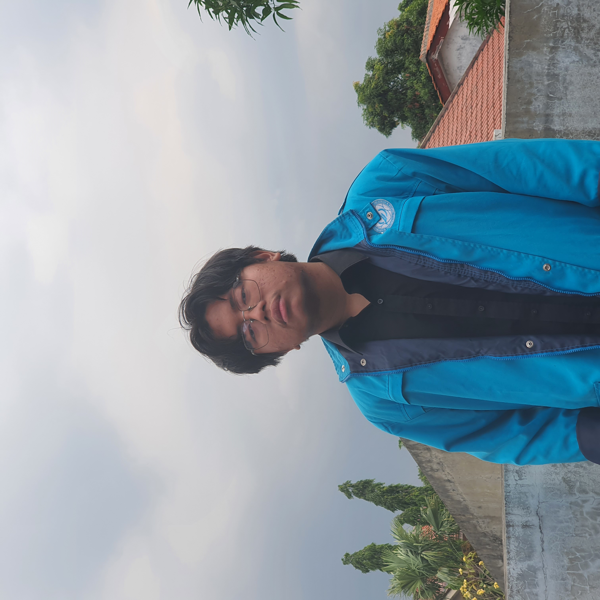

| Nama | : Rafif Rasalhague |  |
| Alamat | : Jl. Rudal IV No.14A, Jakarta Barat | |
| Tempat, tanggal lahir | : Jakarta, 7 Januari 2003 | |
| Umur | : 20 tahun | |
| Pendidikan | : S1 Sistem Informasi Telkom University | |
| Nomor Telepon | : 087877278714 |
| Kelebihan | Kekurangan | Kemampuan | Kompetensi |
|---|---|---|---|
| Senang untuk mempelajari dan merasakan hal-hal baru. | Mudah untuk melupakan sesuatu yang dirasa tidak terlalu penting. | Mengedit foto dan video. | Lulus exam AC010 |
| Mudah untuk beradaptasi dengan lingkungan baru | Emosi terkadang suka lepas kontrol. | Dapat mengoperasikan kamera. | Menyelesaikan modul Cisco |
| Dapat menjadi pendengar yang baik. | Ketergantungan terhadap validasi orang lain terhadap hal yang dilakukan. | Bernyanyi | Mendapatkan skor 563 di EPRT |
Hormat Saya,
Rafif Rasalhague
TTd